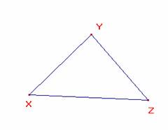
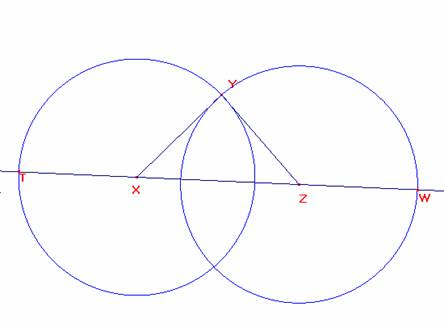
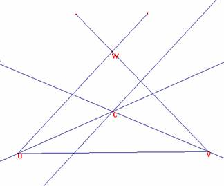
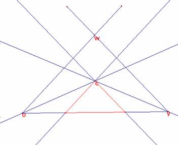

Problema 324
Ejercicios31. Construir un triángulo conociendo el perímetro y dos ángulos.
Severi, F. (1952) : Elementos de geometría I, con 220 figuras, traducción de la segunda edición italiana por el profesor T. Martín Escobar, de la Escuela Industrial de Gijón. Tercera reimpresión. Editorial Labor, Barcelona. Talleres Gráficos Ibero-Americanos S.A. Reproducción offset.(pág 201)
Solución del director
Se construye un triángulo semejante al dado que tendrá sus tres ángulos iguales.


Con centros en X y Z trazamos las circunferencias de radios XY y ZY que cortarán a la recta XZ en los puntos T y W. TW es el perímetro de XYZ y los triángulos TXY y WZY son isósceles con sus ángulos la mitad de los de X y Z.
Procedamos con la construcción.
Sea UV de longitud el perímetro dado.

Construyamos por U y V los ángulos dados que se cortarán en W y tracemos sus bisectrices que se cortarán en C.
Por C tracemos paralelas a UW y a VW, que cortarán a UW en A y B.
ABC es el triángulo pedido.

Ricardo Barroso Campos
Didáctica de las Matemáticas
Universidad de Sevilla